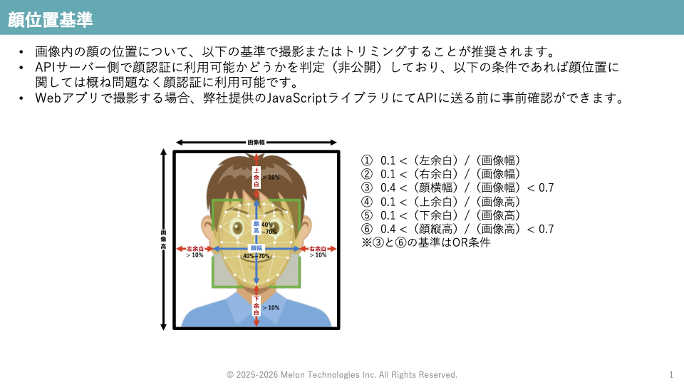

Face Registration
Your face image must fit the space criteria. Please follow the guide below:

Click to upload or drag & drop
Supported: JPG, PNG, WEBP
Face Authentication
Note: Device registration is required only once.
After that, you can authenticate multiple times.
face-api.js で利用する顔検知のモデルを選択してください（MelonさんのAPIはモデルが1種類のみなので選択する必要はありません）。SSdMobilenetv1はPCで顔認証を行うときに利用しているモデルで正確な分、少し動作が重いです。TinyFaceDetectorはモバイルで顔認証を行うときに利用しているモデルで動作が早い分、精度が少しさがります。
face-api.js の顔検知の精度を変更できます。値が小さいと顔を検出しやすくなり（誤検知が増えます）、値を大きくすると顔を厳密に検知するようになるので、AUTHENTICATEボタンをクリックした後に "Could not detect face" （顔を検出できませんでした）のエラーが発生しやすくなります。
0.1 (Lenient)
0.5
0.9 (Strict)